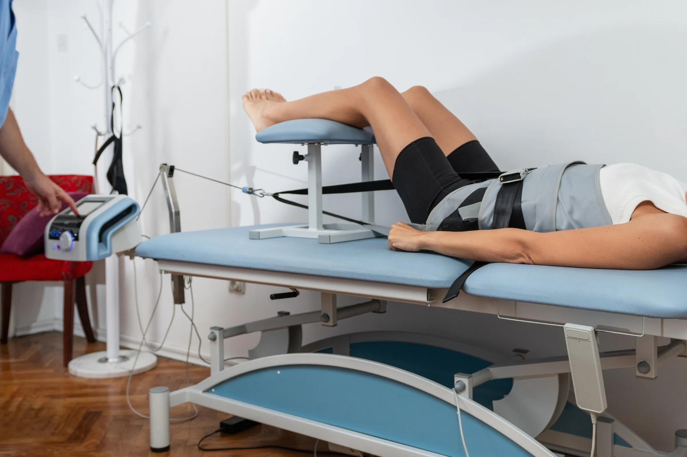

Spinal decompression is a gentle, motorised form of traction. You lie comfortably on a table while it applies slow, controlled cycles of stretch to the low back, easing pressure across the discs and the space the nerves travel through. It is a non-surgical option often used for disc-related back and leg pain, and it works alongside hands-on care and movement rather than in place of them.

Spinal decompression gets some big promises attached to it online. Here is the grounded version: what it actually is, how it works, who it tends to suit, and an honest word on what the evidence does and does not say.
What is spinal decompression?
It is a specific kind of traction, delivered by a motorised table rather than by hand. You are secured comfortably on the table, which applies slow, gentle cycles of pull and release to the low back. The idea is to gently ease pressure across the discs and open a little more room where the nerve roots exit, which for the right person can take the edge off an irritated disc or nerve.
It is not dramatic and it should not hurt. Most people find the sessions relaxing, and many read or rest through them. It is one tool among several, and we use it where it fits rather than as an answer to everything.
Who is it for?
Decompression tends to suit low back and leg pain that has a disc or nerve-compression component, the kind where sitting makes it worse and a disc shows up as part of the picture. It is not right for everyone, and part of a good assessment is being honest about whether you are a good candidate.
- Low back pain linked to a bulging or herniated disc.
- Sciatica or leg pain from a nerve being crowded in the low back.
- Pain that eases when the spine is gently unloaded.
- People who want to try a non-surgical option before considering anything more.
Some situations are not suited to decompression, including certain fractures, advanced osteoporosis, and some post-surgical spines. That is exactly what the first assessment is for, and we will tell you plainly if it is not the right fit.
What does a session involve?
You stay fully clothed and lie down comfortably while the table does the work in slow, gentle cycles. A session is unhurried and should feel like a relieving stretch, never a strain. We pair it with the hands-on care and movement that address why the disc got overloaded in the first place, because the table alone does not change your day-to-day loading.
What does care cost, and do you take insurance?
No referral is needed to book an assessment, and we will go over the costs with you up front so there are no surprises. Coverage for decompression varies by plan, and we will always walk you through the numbers, and whether you are a good candidate, before anything begins.
- No referral needed to book a first assessment.
- We go over the costs with you before anything begins, so you know what to expect.
- Clear, up-front pricing and an honest read on whether it suits you, before you commit.
We cannot promise a specific outcome or what your insurance will cover, and decompression is not right for every back. What we can promise is an honest assessment of whether it fits your case, and a straight answer either way.
of the population in developed countries is affected by intervertebral disc disease each year, according to the U.S. National Library of Medicine. Disc-related back and leg pain is common, and decompression is one non-surgical option among several worth an honest look for the right person.
Source: U.S. National Library of Medicine, MedlinePlus Genetics: Intervertebral disc disease. medlineplus.gov